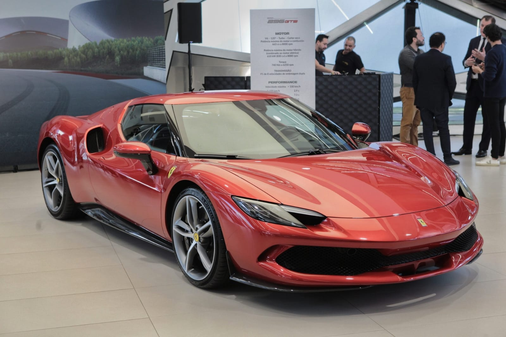
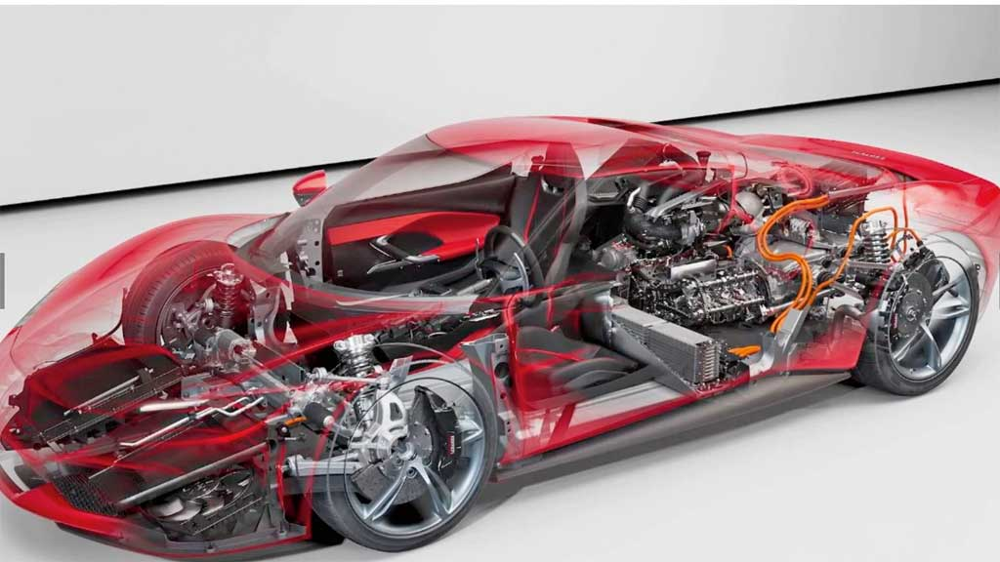
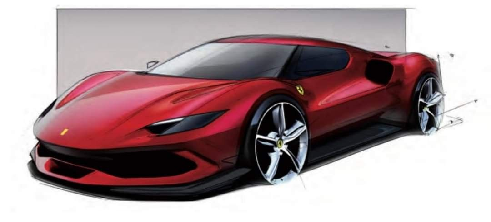
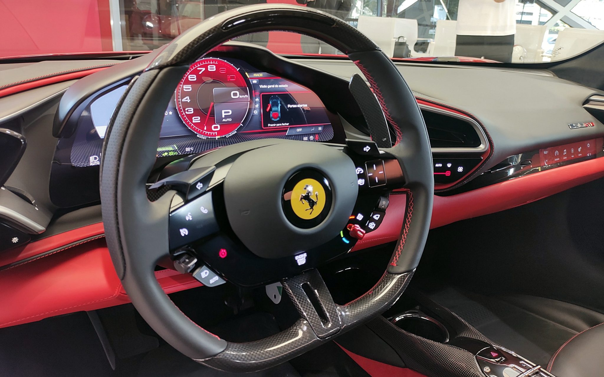
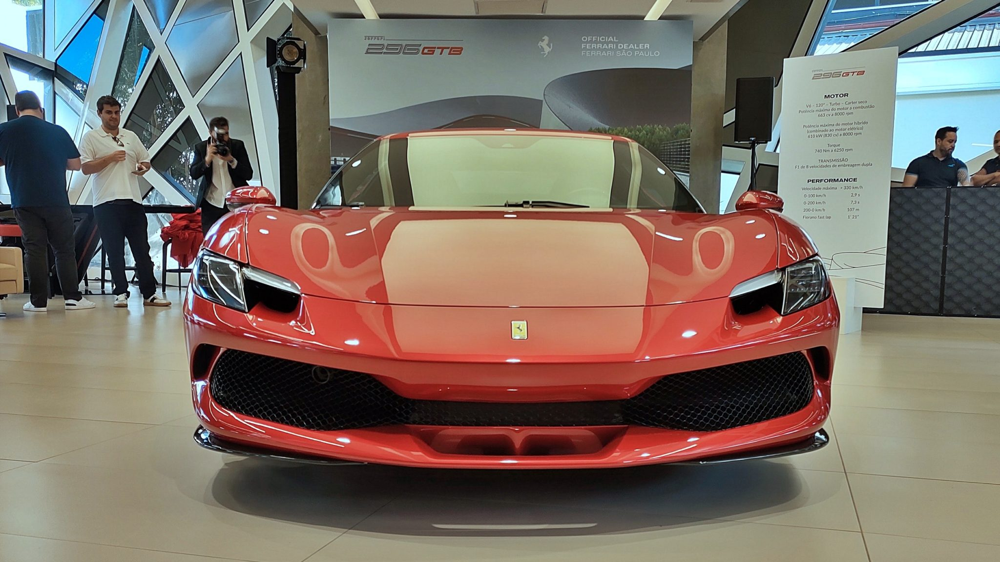

Ferrari 296 GTB híbrida de 830 cv custa quase R$ 5 milhões no Brasil
A Ferrari 296 GTB é um dos mais recentes modelos da renomada fabricante italiana de automóveis esportivos Ferrari, e representa uma nova era para a marca em termos de inovação tecnológica e desempenho. Lançada em 2021, a 296 GTB destaca-se por ser o primeiro modelo da Ferrari a utilizar um motor V6 híbrido plug-in, combinando tradição e modernidade de maneira impressionante.
Desempenho e Motor
O coração da Ferrari 296 GTB é o seu motor V6 biturbo de 2.9 litros, que, junto com um motor elétrico, entrega uma potência combinada de 830 cavalos. Este motor é uma obra de engenharia, concebido para proporcionar um desempenho excepcional enquanto mantém um nível de eficiência energética notável. A transição para um motor V6 não diminui a performance; pelo contrário, o veículo acelera de 0 a 100 km/h em apenas 2,9 segundos e pode atingir uma velocidade máxima de 330 km/h.
Sobre o design
O design da 296 GTB é uma fusão entre elegância e agressividade. Com linhas fluídas e aerodinâmicas, o carro reflete a herança da Ferrari, ao mesmo tempo que introduz elementos modernos. A frente do carro é caracterizada por um capô baixo e largo, com faróis estreitos que conferem uma expressão ameaçadora. A traseira do veículo é igualmente impressionante, com difusores grandes e um sistema de escape central, contribuindo não apenas para a estética, mas também para a eficiência aerodinâmica e a estabilidade em alta velocidade.
Tecnologia e Interior
O interior da Ferrari 296 GTB é um reflexo da sua fusão entre tradição e inovação. Equipado com a mais recente tecnologia em termos de infotainment e assistência ao condutor, o cockpit é centrado no motorista, com controles intuitivos e um painel digital que fornece todas as informações necessárias. O uso de materiais de alta qualidade, como couro, fibra de carbono e alumínio, proporciona um ambiente luxuoso e esportivo.
Sustentabilidade
Um dos aspectos mais notáveis da 296 GTB é a sua configuração híbrida. A Ferrari integrou um motor elétrico que não só melhora o desempenho, mas também permite ao carro rodar em modo totalmente elétrico por até 25 km. Esta capacidade híbrida reflete a abordagem da Ferrari para um futuro mais sustentável, sem comprometer a experiência de condução pela qual a marca é conhecida.
| Característica | Ferrari 296 GTB | McLaren Artura | Porsche 918 Spyder | Acura NSX |
| Motorização | V6 biturbo 2.9L + motor elétrico | V6 biturbo 3.0L + motor elétrico | V8 4.6L + 2 motores elétricos | V6 biturbo 3.5L + 3 motores elétricos |
| Potência Combinada | 830 cv | 680 cv | 887 cv | 573 cv |
| Aceleração 0-100 km/h | 2,9 s | 3,0 s | 2,6 s | 3,1 s |
| Velocidade Máxima | 330 km/h | 330 km/h | 345 km/h | 307 km/h |
| Autonomia Elétrica | 25 km | 30 km | 19 km | 21 km |
| Design | Esportivo e aerodinâmico | Esportivo e elegante | Esportivo e futurista | Esportivo e moderno |
| Tecnologia | Cockpit digital, controles intuitivos | Cockpit digital, tecnologia avançada | Cockpit digital, tecnologia de ponta | Cockpit digital, tecnologia avançada |
| Preço Aproximado | $320.000 | $225.000 | $845.000 (quando lançado) | $157.500 |